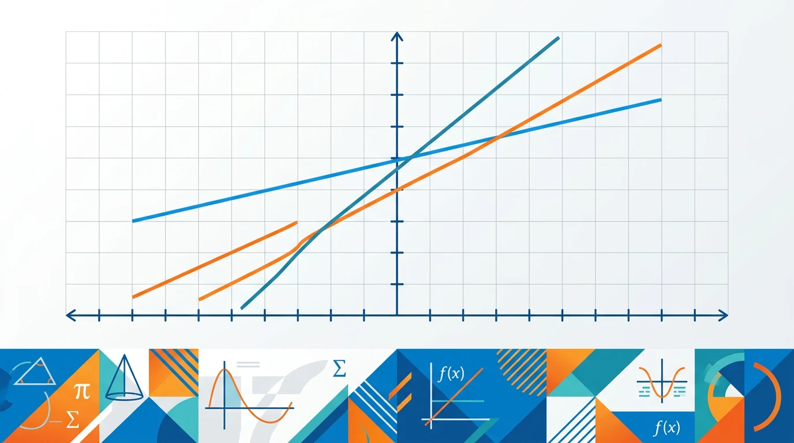

为什么要学一次函数？你已经会算单次价格，但面对“月租 + 单价 × 用量”这类真实选择时，光靠直觉会出错，所以我们用一次函数把选择变成可验证的图像证据。
本课使用 Edge Neural 高质量 TTS 生成 MP3，不使用低质量浏览器朗读作为发布音频。
选择或输入后，后续探究会围绕你的问题展开。
套餐 A：月租 20 元，每 GB 收 6 元。套餐 B：月租 50 元，每 GB 收 2 元。
表格里，每多 1GB，费用按固定数增加。
总费用 = 固定月租 + 每 GB 单价 × 用量。
打车费、会员费、打印费也常是同样结构。
套餐 C：10 + 5x，x=6 时多少钱？
比较 y=15+4x 与 y=39+x，求费用相等的 x。
自己设计两个打印店收费方案，让它们在 80 页时价格相同。
易错点提醒：不要把“月租”当成斜率，也不要把“每 GB 单价”当成截距；交点表示两种方案费用相同，不表示用量最大。
变量关系一次函数表达式函数图像交点与比较现实情境建模
1. 你平时如何选择手机套餐？会考虑哪些因素？2. 如果某套餐月租60元含10GB，超出部分2元/100MB，你能列出费用函数吗？
1. 某套餐月租75元含15GB，超出后3元/GB，用量22GB时应缴费多少？2. 若y=30+2x表示某计费方式，其中x的单位是小时，y的单位是元，斜率2代表什么实际意义？
常见错因分析：①忽略定义域限制，认为函数在所有实数都适用；②混淆斜率与截距的实际意义，如将月租费误认为单价；③未注意分段函数在不同区间的表达式变化。诊断方法：建议用'单位检验法'——给x赋予具体单位量纲，检查y的单位是否符合实际意义。
迁移探究：设计一个健身房会员费用比较方案。已知：基础卡月费200元含8次，超次收费30元/次；尊享卡月费350元不限次。分析不同运动频率下如何选择，并绘制费用函数图像说明临界点。
先独立作答，再点选项查看对错与错因。
当使用流量为15GB时，B套餐比A套餐节省多少元？
两种套餐费用相同时的流量使用量是？
下列哪个流量区间B套餐更划算？
A套餐的费用函数为y=____（x≤5）和y=____（x>5）
答案：58,58+10(x-5)
分段函数需分别表示基础费用和超出部分
当使用____GB流量时，选择B套餐可节省最多26元
答案：12
代入x=12计算得A套餐118元，B套餐96元
关于函数斜率的理解正确的是？
建立分段函数模型并绘制图像
❓ 选贵的套餐一定更划算吗？
❓ 流量超了费用会爆炸式增长吗？
❓ 怎么一眼看出哪个套餐适合我？
学完这一课，这些问题你都能自信地回答。
🎯 能说出一次函数解析式三要素（k、b、x）
🎯 能判断套餐费用变化趋势（直线上升/固定不变）
🎯 能分析不同流量使用量下的最优套餐
将套餐费用拆解为固定月租+流量单价×使用量
斜率k代表流量单价，截距b代表固定费用
画图找交点，交点两侧费用高低会反转
用函数图像直观呈现费用变化趋势
同样方法可分析打车计费、水电收费等问题
✅ 对比时要同时考虑k和b
💡 只关注单价k
✅ 交点只是费用相等点
💡 混淆交点与极值点概念
口诀：k是单价b是底，交点就是分水岭
类比：就像打车：起步价是b，每公里价是k
And：学生知道手机套餐有月租费和流量费
But：不清楚具体费用如何随流量变化
Therefore：通过具体数字拆解费用构成
一次函数y=kx+b中，k代表每MB流量价格（如0.5元/MB），b代表固定月租费（如30元）。例如：套餐A是y=0.5x+30，用100MB时费用=0.5×100+30=80元。注意：超出套餐流量后k值会变大！
🌍 就像打车：起步价8元（b值），每公里2元（k值）。坐3公里就是2×3+8=14元。
套餐B月租50元，含1GB流量，超出后0.2元/MB，用1200MB时费用多少？
And：学生能列出不同套餐的函数式
But：难以直观比较何时哪个更划算
Therefore：用图像呈现费用变化关键点
在坐标系中：横轴是流量x（MB），纵轴是费用y（元）。例如画套餐A(y=0.5x+30)和套餐B(y=0.3x+50)的图像，交点就是费用相同的临界点（解方程0.5x+30=0.3x+50得x=100MB）。低于100MB选A，高于选B。
🌍 就像比较外卖会员：会员卡有月费但折扣大，买得多才回本。
右图两直线交于(500,100)，以下说法正确的是？
And：学生理解单一计费模式
But：真实套餐常有分段计费
Therefore：处理更复杂的实际问题
当套餐包含免费流量时，函数要分段：比如套餐C月租60元含2GB，超出后0.1元/MB。函数式为：y=60（当x≤2048MB）；y=60+0.1(x-2048)（x>2048）。计算用3GB费用：60+0.1×(3072-2048)=60+102.4=162.4元。
🌍 类似阶梯水价：用的越多单价越高，要分档计算。
套餐D前100分钟通话免费，超出一分钟0.5元，月租20元。打180分钟费用？
